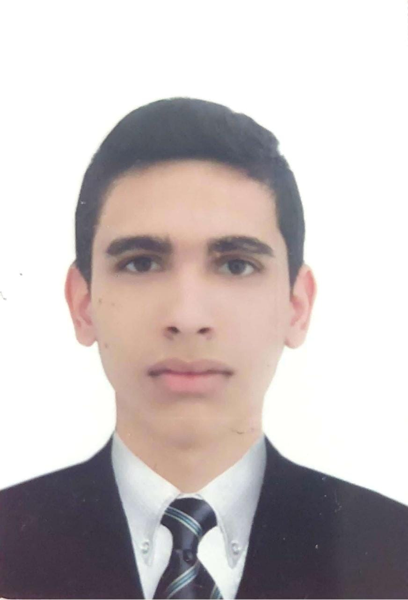

Andrés Felipe Bedoya Escobar
24, Ingeniero Electrónico
Andrés Felipe Bedoya Escobar
24, Ingeniero Electrónico
Informacion Personal
nombres y apellidos:
Andres Felipe Bedoya Escobar
Direccion:
Calle 23 sur # 23 - 30
Correo:
andresbedoya03@gmail.com
Telefono:
3195302661
Perfil Personal
Actualmente curso noveno semestre de ingeniería electrónica, me encuentro interesado en el área de control y automatización, domótica y energías renovables. me he desempeñado como técnico en reparación y mantenimiento de equipos de sonido e iluminación en una empresa familiar prestadora de estos servicios. Adicional a esto me considero una persona honesta, con buen manejo de relaciones interpersonales, responsable con cada uno de mis deberes y compromisos adquiridos. Me caracterizo por el trabajo en equipo, siempre en pro del bienestar común. Me motiva poder adquirir la experiencia y aprender del contexto y compañeros, dispuesto a escuchar y canalizar aspectos positivos o recomendaciones para mejorar mi practica laboral día a día.
experiencia
10 junio 2017 - actualmente
Dj • Tecnico • Bedoya Producciones
Actualmente me encuentro laborando como técnico, realizando mantenimiento y reparaciones a equipos de sonido e iluminación. Con el conocimiento adquirido en electrónica he mejorado mis servicios, ya que actualmente si la placa es algo sencilla en vez de buscar un reemplazo puedo realizar el análisis y diseñar un repuesto extra de ser necesario.
Formacion
Gimnasio Humanístico, Neiva, Huila.
• Bachiller académico.
Universidad Surcolombiana, Neiva, Huila.
• Ingeniería Electrónica, noveno semestre.
Enfatizándome en los cursos de electrónica analógica, digital, generación distribuida, control y automatización de procesos industriales.